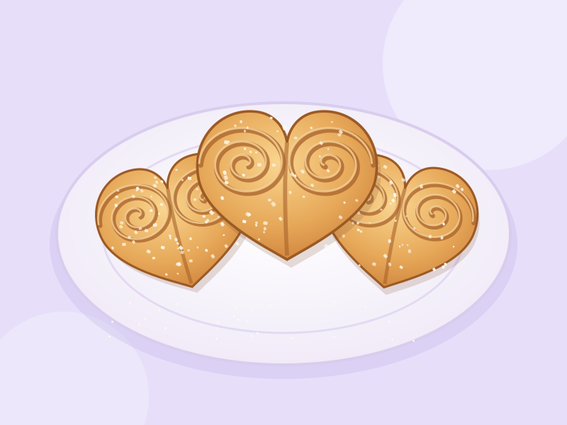

Área 04
Masas hojaldradas
Masas danesas, palmeritas, carré de manzana y New York rolls: láminas, rellenos y terminaciones.
4 recetas



Hojaldradas
Masas danesas (medialunas y facturas)
Medialunas y facturas de masa danesa, con almíbar, crema pastelera y rellenos dulces.
Hojaldradas
Palmeritas
Masa hojaldrada cubierta de azúcar
Hojaldradas
Carré de manzana
Masa de hoja con relleno de manzana
Hojaldradas
New York rolls
Rollo de masa hojaldrada originario de new york